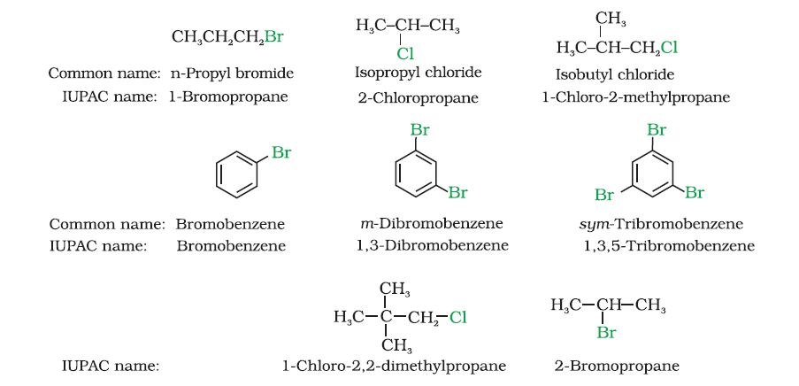
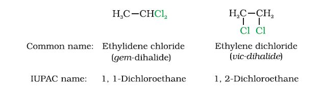
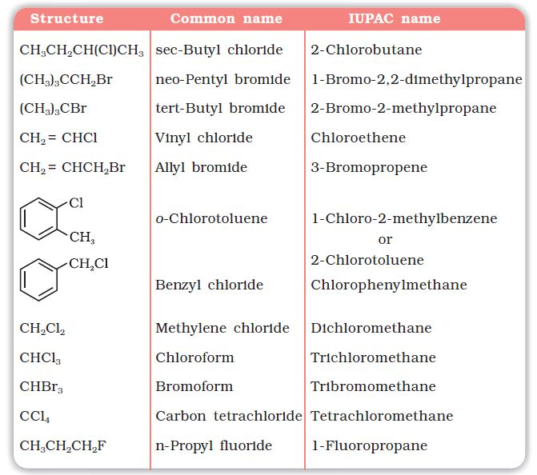
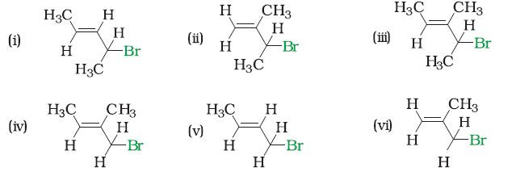

Having learnt the classification of halogenated compounds, let us now learn how these are named. The common names of alkyl halides are derived by naming the alkyl group followed by the halide. Alkyl halides are named as halosubstituted hydrocarbons in the IUPAC system of nomenclature. Haloarenes are the common as well as IUPAC names of aryl halides. For dihalogen derivatives, the prefixes o-, m-, p- are used in common system but in IUPAC system, the numerals 1,2; 1,3 and 1,4 are used.

The dihaloalkanes having the same type of halogen atoms are named as alkylidene or alkylene dihalides. The dihalo-compounds having same type of halogen atoms are further classified as geminal halides (halogen atoms are present on the same carbon atom) and vicinal halides (halogen atoms are present on the adjacent carbon atoms). In common name system, gem-dihalides are named as alkylidene halides and vic-dihalides are named as alkylene dihalides. In IUPAC system, they are named as dihaloalkanes.

Some common examples of halocompounds are mentioned in Table 10.1.
Table 10.1: Common and IUPAC Names of some Halides

Example 10.1
Draw the structures of all the eight structural isomers that have the molecular formula C5H11Br. Name each isomer according to IUPAC system and classify them as primary, secondary or tertiary bromide.
Solution CH3CH2CH2CH2CH2Br 1-Bromopentane (1°) CH3CH2CH2CH(Br)CH3 2-Bromopentane(2°) CH3CH2CH(Br)CH2CH3 3-Bromopentane (2°) (CH3)2CHCH2CH2Br 1-Bromo-3-methylbutane (1°) (CH3)2CHCHBrCH3 2-Bromo-3-methylbutane(2°) (CH3)2CBrCH2CH3 2-Bromo-2-methylbutane (3°) CH3CH2CH(CH3)CH2Br 1-Bromo-2-methylbutane(1°) (CH3)3CCH2Br 1-Bromo-2,2-dimethylpropane (1°)Example 10.2 Write IUPAC names of the following:

Solution
| (i) 4-Bromopent-2-ene | (ii) 3-Bromo-2-methylbut-1-ene |
| (iii) 4-Bromo-3-methylpent-2-ene | (iv) 1-Bromo-2-methylbut-2-ene |
| (v) 1-Bromobut-2-ene | (vi) 3-Bromo-2-methylpropene |